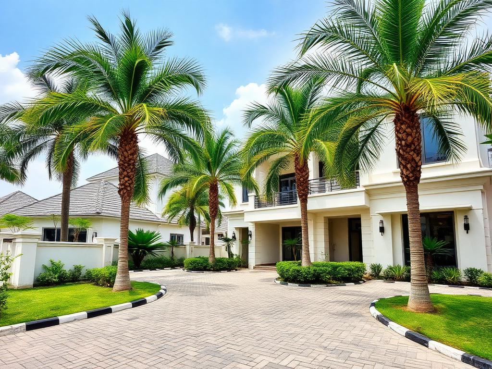

Commercial Construction
Office towers, malls, and mixed-use developments built to international standards.
From Victoria Island towers to Lekki estates and federal road corridors, Sterling & Vale delivers commercial, residential and civil construction with engineering rigor and on-time precision.
250+
Completed projects
18 yrs
In operation
40+
Engineers on staff
0
OSHA-class incidents 2025
From design coordination to final handover, our teams cover every layer of modern construction.
Office towers, malls, and mixed-use developments built to international standards.
Estates, terraces, and luxury homes designed for African families.
Roads, bridges, and infrastructure that move Nigeria forward.
Commercial · Victoria Island, Lagos · 2024

Residential · Lekki, Lagos · 2023
We combine international construction standards with deep local know-how — from sourcing and labour to navigating Lagos State approvals.
OSHA-aligned protocols across every project.
Recognized by NIOB and CORBON for delivery.
Design coordination through final handover.
In-house artisans, not subcontractor roulette.
"Sterling & Vale delivered our 14-storey HQ three weeks ahead of schedule with zero variations. That kind of discipline is rare in this market."
Adaeze Okafor — COO, Meridian Holdings
Get a no-obligation feasibility review within 5 business days.